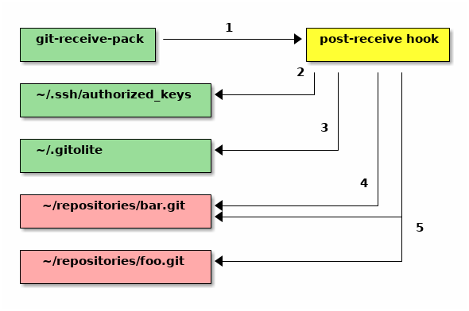

concepts, conventions, and terminology
(I assume you're at least somewhat familiar with git itself. If not, the "before you start..." page has a list of topics that you need to be familiar with, in order to use gitolite.)
This page will help newcomers get used to what we're talking about elsewhere.
It also explains the special gitolite-admin repo and how it is used to do te
day-to-day management of a gitolite server.
authentication and authorisation
Gitolite does not do authentication. It only does authorisation.
So let's loosely define these words:
Authentication is the process of verifying that you are who you claim to be. An authentication system will establish that I am the user "sitaram" on my work system. The one behind gmail will similarly establish that I am "sitaramc". And so on...
Authorisation is the process of asking what you want to do and deciding if you're allowed to do it or not.
When you install gitolite, your users will authenticate themselves to your server's "sshd" (ssh daemon) or to your web server. If authentication succeeds, sshd or httpd will pass control to gitolite, which then performs the authorisation check -- i.e., figure out whether to allow you to do whatever it is you want to whatever repo you decided to touch.
ssh mode and http mode
Git allows authenticated remote access using these two mechanisms: ssh and http. Gitolite supports both.
Ssh mode is much easier to install and setup; most systems already have whatever you need, and -- except for creating the "hosting user" -- you don't need to do anything as root. However, your users have to generate an ssh keypair for themselves (using "ssh-keygen") if they don't already have a keypair, and they have to send you the public key (the file ending in ".pub"), which you add to gitolite.
Http mode requires a bit more work in terms of setting things up. Once setup, however, it may be a little easier for your users. Authentication is by username + password, which, although much less secure than ssh keypairs, is conceptually easier for users.
The "hosting user"
If you're wondering how it distinguishes between different users when they are all logging into "git", this page has answers!
When you install gitolite in ssh mode, you pick one specific user on the Unix
system to be the "hosting user". This is the user whose name goes into the
repo URLs your users will be cloning, for example ssh://git@server/repo, or
the simpler form git@server:repo.
Usually, this is "git", and that is what we assume in this documentation. However, it can actually be any user on the system, and I think both the Fedora RPM and the Debian DEB use "gitolite", so adjust instructions and examples accordingly. Unless otherwise stated, everything that we do "on the server" is done in this userid (for ssh mode installations).
Of course you can have any number of "hosting users", but that's rare.
the "logical repo name"
Gitolite refers to repos using a logical repo name, which is whatever name you
specified in the gitolite.conf file (described later). The actual repo will
be in $HOME/repositories, and will have a ".git" suffix. So, for example,
the logical repo name "foo" will be $HOME/repositories/foo.git on disk, and
"bar/baz" will be $HOME/repositories/bar/baz.git. The logical repo name is
what you must use for all interactions with gitolite (within the conf file,
repo name arguments to gitolite commands or API functions, etc.) unless
specifically documented otherwise.
One exception: you're allowed to add the ".git" extension in git commands
(clone, fetch, push, ls-remote, archive) if you wish, because git itself
allows it, and we'd like to be as transparent as possible. The
$HOME/repositories prefix should never be specified. If you do specify it,
and things appear to work, something is wrong!.
the special gitolite-admin repo
Gitolite manages git repos. Among them is a repo called "gitolite-admin", which is a very special repository that helps you add and remove users and repos, as well as define access rules for them. Most day-to-day management of gitolite is done by cloning this repository, making changes to it, and pushing the changes back to the server.
Specifically, it contains a directory called "keydir", in which you place files with names like "alice.pub", "bob.pub", etc. These are the public keys of you and your users. (Of course this applies only to ssh mode).
It also contains a file called "conf/gitolite.conf", in which you add access rules specifying who gets what level of access to each repo. Here's a simple example:
# these lines were already in the file repo foo RW+ = alice RW = bob # these lines were added just now repo bar RW+ = bob R = alice
Here's what happens when you commit the changes/additions to these files and push them to the server. Since we've already seen the ssh/sshd part of this process (in the overview page), we'll start off from "git-receive-pack":

-
The
gitolite-adminrepo has a specialpost-updatehook, installed by gitolite, which is invoked bygit-receive-pack. This is how gitolite gets in on the action. -
Gitolite looks at the keys in keydir, and updates ssh's authorized keys file using those keys, so ssh knows who the valid users are. A ton of detail about this is in the ssh pages.
-
It then updates some internal files in
~/.gitolite -
For new repositories (repos that do not exist in
~/repositories, but are mentioned inconf/gitolite.conf), it creates the repository. -
For each repository, it updates a special file inside the repository that contains the rules pertaining to that repository.
And that, boys and girls, is how gitolite does its thing. That is also why you should NEVER touch any of those files yourself, unless you know what you're doing!